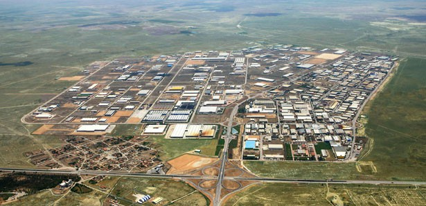

Tarým Ürünleri
Buðday: Bölgedeki tarým alanlarýnýn yarýsýndan fazlasýnda buðday ekilir. En fazla ekim alanýna sahip Þanlýurfa’yý Diyarbakýr izler.
Arpa: Bölgede yetiþtirilen diðer önemli tahýl olan arpa, en fazla Þanlýurfa, Siirt ve Adýyaman’da yetiþtirilir.
Pamuk: Bölgede en fazla ekilen endüstri bitkileri arasýnda yer alan pamuk, halen sulanmakta olan Akçakale ve Gaziantep’te yetiþtirilir.
Kýrmýz Mercimek: Kuraklýða dayanýklý bir baklagildir. Türkiye üretiminin tamamýna yakýnýný bu bölge saðlar. En çok Þanlýurfa ve Gaziantep’te yetiþtirilir.
Susam: Az bir alanda ekimi yapýlmaktadýr. Ancak üretimi bölge için önem taþýr.
Çeltik: Siverek’te yetiþtirilmektedir.
Antep Fýstýðý: Bölgenin karakteristik ürünüdür. Üretimin % 90’ý bu bölgede gerçekleþir.
Üzüm: Özellikle Gaziantep çevresinde baðcýlýk geliþmiþtir. Üretilen üzüm yaþ olarak tüketilmesinin yaný sýra pekmez, pestil ya da içki yapýmýnda kullanýlýr.
Zeytin: Akdeniz ikliminin etkileri görülen Gaziantep yöresinde Kilis ve Islahiye çevresinde yetiþtirilir.
Tütün: Sulama ile birlikte ekim alanlarý geniþlemektedir. Üretimde Adýyaman ve Batman önde gelir.
Sebze: Sulanabilen alanlarda domates, biber, patlýcan gibi çeþitli sebzeler yetiþtirilmektedir.
Meyve: Bölgenin karpuz üretiminde ayrý bir yeri vardýr. Özellikle Diyarbakýr çevresinde aðýrlýðý 20 kg’ý aþan karpuz yetiþtirilmektedir.
sanayi
Güneydoðu Anadolu Bölgesinde Sanayi Faaliyetleri
Güneydoðu Anadolu Bölgesinde sanayi geliþmemiþtir.
Sanayinin en fazla geliþtiði il Gaziantep ilidir. Ýlde çeþitli sanâyi kuruluþlarý vardýr.
Güneydoðu Anadolu bölgesinde geleneksel sanâyi kollarýnýn yanýnda çimento, gýda, dokuma, mâdenî eþyâ, tarým âletleri gibi sanâyi kuruluþlarý geliþmeye baþlamýþtýr.
